4．莱布尼茨的工作
在建立微积分中和牛顿并列的是莱布尼茨（1646—1716），虽然他的贡献是完全不同的。他研究法律，在答辩了关于逻辑的论文之后，得到哲学学士学位。1666年他写了论文《论组合的艺术》（De Arte Combinatoria）(11)，这是一本关于一般推理方法的著作，这就完成了他在阿尔特多夫（Altdorf）大学的哲学博士论文并使他获得教授席位。1670年和1671年，莱布尼茨写了他的第一篇力学论文，1671年左右，他制造出他的计算机。他得到一件差使，作为美因茨（Mainz）选帝侯（德国有权选举神圣罗马帝国皇帝的诸侯。——译者注）的大使在1672年3月政治出差到巴黎。这次访问使他同数学家和科学家接触，其中值得注意的是惠更斯激起了他对数学的兴趣。虽然他在这门学科中作过一些阅读并写了1666年的论文，但他说直到1672年他还基本上不懂数学。1673年他到伦敦，遇到另外一些科学家和数学家，包括当时的伦敦皇家学会秘书奥尔登伯格。虽然他靠做外交官生活，但却更深入地钻研了数学，研究了笛卡儿和帕斯卡。1676年他被任命为汉诺威（Hanover）选帝侯的图书馆管理员和顾问。24年后勃兰登堡（Brandenburg）的选帝侯邀请莱布尼茨在柏林工作。尽管莱布尼茨卷入了各种政治活动，其中包括路德维希（George Ludwig）继承英国王位的活动，但他的工作领域是广泛的，他的业余活动的范围是庞大的。1716年他无声无息地死去。
除了是外交官外，莱布尼茨还是哲学家、法学家、历史学家、语言学家和先驱的地质学家，他在逻辑学、力学、光学、数学、流体静力学、气体学、航海学和计算机方面做了重要的工作。虽然他的教授席位是法学的，但是他在数学和哲学方面的著作列于世界上曾产生过的最优秀的著作之中。他用通信保持和人们接触，最远的到锡兰（Ceylon）(12)和中国。他无休止地想调和旧教和新教的信仰。正是他，在1669年提议建立德国科学院，1700年柏林科学院终于组织起来了。他原来的意见是要成立一个学会，从事于对人类有益的力学中的发明和化学、生理学方面的发现。莱布尼茨要求知识是应用的。他把大学称作“僧院”，指责他们拥有知识而没有判断力，并且专门注意小事情。相反地，他力劝追求真正的知识——数学、物理、地理、化学、解剖学、植物学、动物学和历史。在莱布尼茨看来，手工艺人和实践者的技能比专门学者的深奥的细微末节要有价值。他认为德文优于拉丁文，因为拉丁文联系于古老的无用思想。他说，人们用拉丁文来吸引别人的注意，而掩饰自己的无知。相反，德语是一般人都理解的，而且经过发展，能帮助思想的清晰和说理的锐利。
莱布尼茨从1684年起发表微积分论文，以后我们将更多地谈到它们。然而，他的许多成果，以及他的思想的发展，都包含在他从1673年起写的、但他自己从未发表过的成百页的笔记本中。这些笔记，人们也许能预料到，从一个课题跳到另一个课题，并且随着他思想的发展而改变他所用的记号。有些是在他研究圣文森特的格雷戈里、费马、帕斯卡、笛卡儿和巴罗的书或文章时，或是试图把他们的思想纳入他自己处理微积分的方式时所出现的简单思想。1714年莱布尼茨写了《微分学的历史和起源》（Historia et Origo Calculi Differentialis），在这本书中，他给出一些关于他自己思想发展的记载。但是这是在他的工作做了以后许多年才写的，而且由于人的记忆力的衰减和他在此时获得的巨大洞察力，他的历史可能不是精确的。又因为他的目的是针对当时加于他的剽窃的罪名而保卫自己，所以他可能不自觉地歪曲了关于他的思想来源的记载。
不管莱布尼茨的笔记怎么混乱，我们将仔细检查几篇，因为它们揭示了一个最伟大的天才，怎样为了达到理解和创造而奋斗。1673年左右，他看到求曲线的切线的正问题和反问题的重要性；他也完全相信，反方法等价于通过求和来求面积和体积。他的思想的一些较为系统的发展开始于1675年的笔记。然而，谈一谈他在《论组合的艺术》中所考虑的数的序列、第一阶差、第二阶差以及高阶差，对于了解他的思想是有帮助的。例如，对于平方的序列
0，1，4，9，16，25，36，
第一阶差是
1，3，5，7，9，11，
第二阶差是
2，2，2，2，2．
莱布尼茨注意到自然数列的第二阶差消失以及平方序列的第三阶差消失等。当然，他还观察到，如果原来的序列是从0开始的，那么第一阶差的和就是序列的最后一项。
要把这些事实和微积分联系起来，他必须把序列看作是函数的y值，而把任何两项的差看作是邻近两个y值的差。最初他认为x表示序列中的项的次序，y表示这一项的值。
量dx，他经常写作a，这时候等于1，因为它是两个相连的项的序数之差，dy是两个相连项的值的实际的差。然后用omn．，即拉丁文omnia的缩写，表示和，并用l代替dy，莱布尼茨断言omn．l＝y，因为omn．l是首项为0的序列的第一阶差的和，这样就给出了最后一项。但是，omn．yl产生一个新问题。莱布尼茨获得
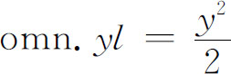
的结论是在y＝x的条件下考虑的。因此，如图17.17所示，三角形ABC的面积是yl的和（对于“很小”的l来说），它也是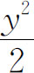
。莱布尼茨说：“从0起增长的直线，每一个用与它相应的增长的元素相乘，组成三角形。”这几点事实，和一些较复杂的东西，已经出现在1673年的论文中。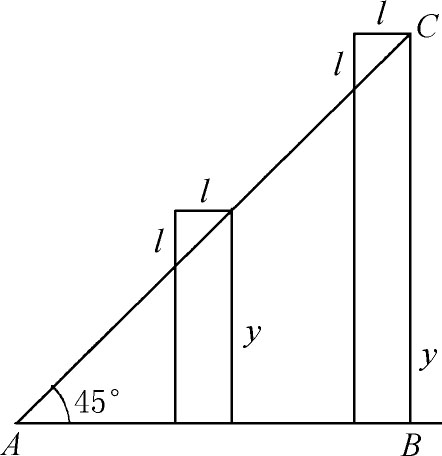
图17.17
下一阶段中，他和几个困难作斗争。他必须从一串离散的值过渡到dy和dx是x的任意函数y的增量的情况。因为他仍然局限于数列，而在数列中x是项的顺序，所以他的a或dx是1；因此他自由地插入或者去掉a。当他过渡到任意函数的dy和dx时，这个a就不再是1了。但是，当他仍然与和的概念作斗争时，他忽略了这个事实。
因此在1675年10月29日的手稿中，莱布尼茨从
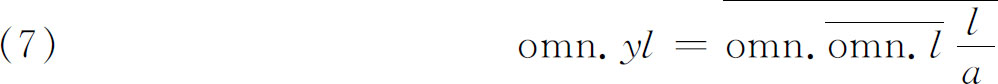
出发，因为y本身就是omn．l，所以（7）是成立的。他用a除l保持量纲。莱布尼茨说，无论l等于什么，（7）是成立的。但是，我们已经在图17.17中看到
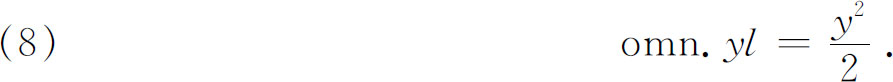
所以，由（7）和（8）得
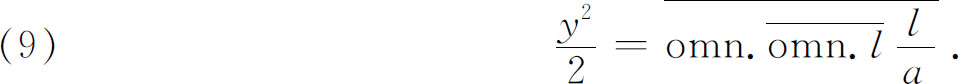
用我们的记号来写，就是
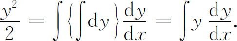
莱布尼茨说，这个结论是值得称赞的。
莱布尼茨从几何的论据中得来的另一个同类型的定理是
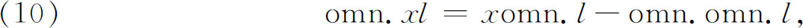
其中l是一个序列中相连两项的差，x是项数。对于我们，这个方程就是
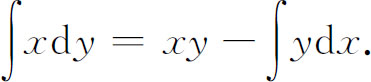
莱布尼茨又假定（10）中的l本身是x，就得到
omn．x2＝xomn．x-omn．omn．x．
他说，但是omn．x是
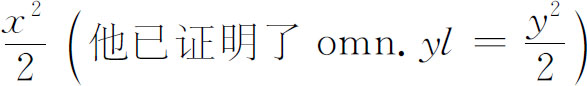
，所以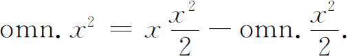
由移置最后一项，他得到
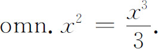
在1675年10月29日的手稿中，莱布尼茨决定用∫代替omn．；因此
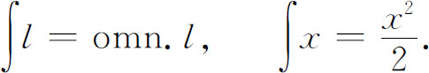
记号∫是“sum”（和）的第一个字母S的拉长。
可能是由于研究巴罗的著作的关系，莱布尼茨很早就意识到，微分与积分（看作是和）必定是相反的过程，所以面积被微分时，必定给出长度。因此，在10月29日的同一篇手稿中，他说：“已知l及它与x的关系，求∫l。”然后，他说：“假定∫l＝ya。设l＝ya/d。［这里他把d放在分母中。如果他写成l＝d（ya），那对我们就会有更好的理解。］那么正如∫将增加维数那样，d将减少维数。但是∫意味着和，d意味着差。从已知的y我们总能求出y/d或者l，即y的微差。因此一个方程能变到另一个方程；正如从方程
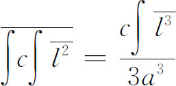
我们得到方程
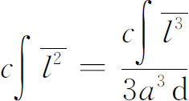
一样。”
在这篇早期论文中，莱布尼茨似乎是在探索∫的运算和d的运算，并看出它们是相反的。最后他意识到∫不提高维数，d也不降低维数，因为∫实际上是矩形的和，因而是面积的和。所以他承认，要从y回到dy，必须做出y的微差或者取y的微分。然后他说：“但是∫意味着和，d意味着差。”这可能是后来加进去的。因此两个星期以后，为了从y得到dy，他从用d除改成做y的微差，并写作dy。
在此之前，莱布尼茨还认为y值是序列的项的值，x通常作为这些项的序数。但是现在，在这篇论文中他说：“所有这些定理对于那些级数是正确的，在这些级数中项的差和项本身间之比小于任意指定的量。”这就是说，dy/y可以小于任意指定的量。
在注着1675年11月11日、标题为《切线的反方法的例子》的手稿中，莱布尼茨用∫表示和，x/d表示差。然后他说，x/d是dx，是两个相邻的x值的差，但是显然这里的dx是常数，并且等于1。
根据上面勉强可以理解的议论，莱布尼茨断定一个事实：作为求和的过程的积分是微分的逆。这个想法已出现在巴罗和牛顿的著作中，他们用反微分求得面积。但莱布尼茨是第一次表达出求和与微分之间的关系。除了这个直率的断言以外，他并不清楚怎样可以从这样一个粗糙的式子∑ydx去得到面积——即怎样从一组矩形得到曲线下的面积。当然，这个困难困扰了17世纪所有的数学家。由于没有清楚的极限概念，或者甚至没有清楚的面积概念，莱布尼茨有时认为后者是非常小而又非常多的矩形的和，因而这个和与曲线下的真正的面积之差是可以忽略的；他有时又认为面积是纵坐标y的和。这后一个面积概念是普通的，尤其是在不可分量论者中，他们认为面积的最终单元与y值是同样的。
谈到微分，即使承认了dy和dx能是任意小的量之后，莱布尼茨仍然必须克服dy/dx不完全是我们意义中的导数这个基本困难。他在帕斯卡和巴罗曾用过的特征三角形上建立他的理论。这个三角形（图17.18）由dy，dx和弦PQ组成，莱布尼茨还认为弦PQ是“P和Q之间的曲线，而且是T点的切线的一部分”。虽然说这个三角形是无穷小的，但他坚持它和确定的三角形是相似的，即相似于由次切线SU，T点的纵坐标以及切线ST组成的三角形STU。因此，dy和dx是最终的元素，它们的比有确定的意义。事实上，他用三角形PRQ和SUT相似的论据得到dy/dx＝TU/SU。
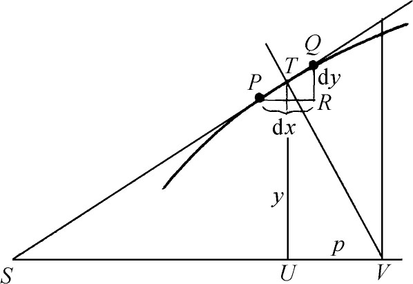
图17.18
在1675年11月11日的手稿中，莱布尼茨说明他怎样能解答一个确定的问题。他寻求次法线与纵坐标成反比的曲线。在图17.18中，法线是TV，次法线是UV。由三角形PRQ和TUV的相似性，他得到
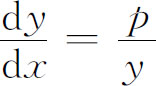
或者
pdx＝ydy．
但是曲线有已知的性质
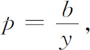
其中b是比例常数。因此
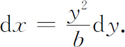
所以
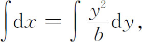
即
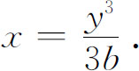
莱布尼茨还解决了其他的反切线问题。
在1676年6月26日的手稿中，他意识到求切线的最好方法是求dy/dx，其中dy和dx是差，dy/dx是商。他忽略dx·dx和dx的高次幂。
1676年11月左右，他能够给出一般法则dxn＝nxn-1dx和
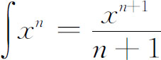
，其中n是整数或分数。他说：“这个道理是普遍的，不管x的序列是什么样的。”这里x仍然意味着序列的项的次序。在这篇手稿中，他说要微分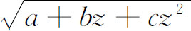
的话，设a＋bz＋cz2＝x，微分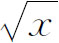
，然后乘以dx/dz。这就是链式法则。1677年7月11日左右，莱布尼茨又能给出正确的法则去微分两个函数的和、差、积、商以及幂和方根，但没有证明。在1675年11月11日的手稿中，他致力于d（uv）和d（u/v），并认为d（uv）＝du·dv。
1680年，dx成为横坐标的差，dy成为纵坐标的差。他说：“……现在把dx和dy取为无穷小，或者把曲线上的两个点理解为它们中间的距离比任何给定的长度都小……”他把dy叫做当纵坐标沿着x轴移动时y的“瞬时的增长”。但是图17.18中的PQ仍被认为是直线的部分。它是“曲线的一个元素，或者是代替曲线的无穷多角的多边形的一条边……”他继续用通常的微分形式。例如，如果y＝a2/x，则
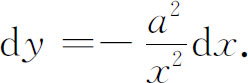
他还说差是相反于和的。因此为了得到曲线下的面积（图17.19），他就计算矩形的和并说能忽略剩余的“三角形，因为它们同矩形相比是无穷小……因此在我的微积分中，我用∫ydx表示面积……”对于弧的元素，他给出
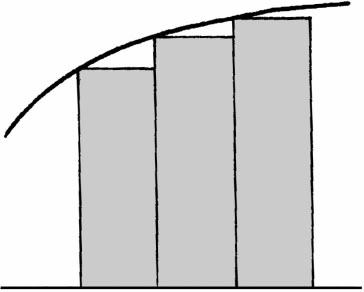
图17.19
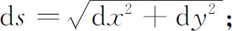
对于曲线绕x轴旋转而得到的旋转体体积，他给出
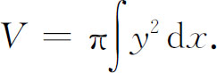
尽管他先前说过，dx和dy是很小的差，但他仍然谈到序列。他说：“差与和是彼此相反的，这就是说，一个级数［序列］的差之和是级数的项，级数和的差也是级数的项，所以我用∫dx＝x表示前者，用d∫x＝x表示后者。”事实上，在1684年以后写的手稿中，莱布尼茨说他的无穷小方法已经众所周知地作为差的微积分了。
莱布尼茨在微积分方面的首次发表的文章是在1684年的《教师学报》(13)上。在这篇文章中，dy和dx的意义仍然是不清楚的。在一个地方，他说设dx是任意的量，dy是由（图17.18）
dy∶dx＝y∶次切线
来定义的。dy的这个定义假定了次切线的一些表达式，因此这个定义不是完全的。另外，莱布尼茨把切线定义为连接两个无限邻近的点的直线，也不是令人满意的。
在这篇文章中，他还给出在1677年获得的两个函数的和、积、商的微分法则以及求d（xn）的法则。对于最后一种情况，他对于n是正整数的情况作出了证明，但是他说对于所有的n，它都是正确的；对于其他法则他没有证明。他给出求切线、求最大最小值以及求拐点方面的应用。这篇6页长的文章是如此不清楚，以至伯努利兄弟说它“与其说是解释，不如说是谜”(14)。
在1686年的论文中(15)，莱布尼茨给出
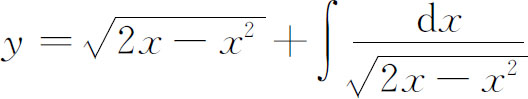
作为摆线的方程。这里，他的意图在于说明用他的方法和符号，可以把一些曲线表示为方程，而其他方法是办不到的。在他的《历史》中他重申了这一点，他说他的dx，ddx（二阶微分），以及作为这些微分的逆的和能应用到所有的x的函数，而且不排除韦达和笛卡儿的机械曲线，虽然笛卡儿曾说过这种曲线没有方程。莱布尼茨还说，他能包括那些即使用牛顿的级数法也不能处理的曲线。
在1686年及其后来的论文中(16)，莱布尼茨给出对数函数和指数函数的微分并承认指数函数是一类。他还讨论了曲率、密切圆和包络理论（见第23章）。1697年在给约翰·伯努利的一封信中，他在积分号下对参变量求微分。他还有这样的想法，即许多不定积分能够在化为已知形式后计算出来，并说在为这种化法准备表格，换句话说，就是准备一个积分表。他试着定义如ddy（d2y）和dddy（d3y）等高阶微分，但是定义不令人满意。他还想发现dαy的意义，其中α是任意实数，但没有成功。
谈到记号，莱布尼茨煞费苦心地工作，要把记号选得最好。当然，他的dx，dy和dy/dx仍然是标准的。他引进记号logx，对于n阶微分引进dn，甚至对∫与n重和分别引进d-1与d-n。
一般地说，莱布尼茨的工作，虽然富于启发性而且意义深远，但它是如此零碎不全，以至几乎不能理解。幸好伯努利兄弟即詹姆斯·伯努利和约翰·伯努利，在莱布尼茨思想的巨大影响和激动下，把他的梗概性的文章大力加工，并作了大量的新发展。这我们以后将要谈到。莱布尼茨同意他们在微积分方面的工作和他一样多。